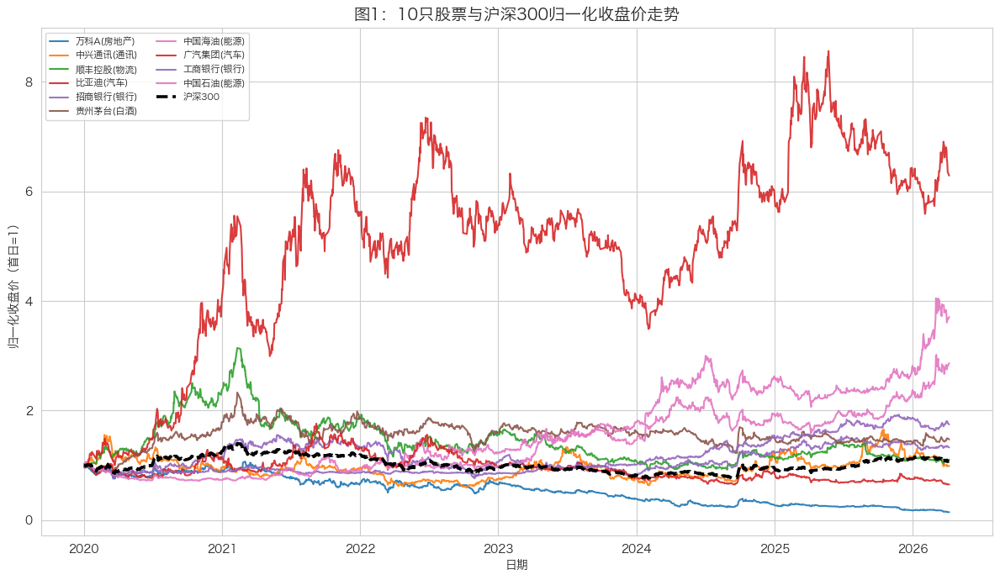
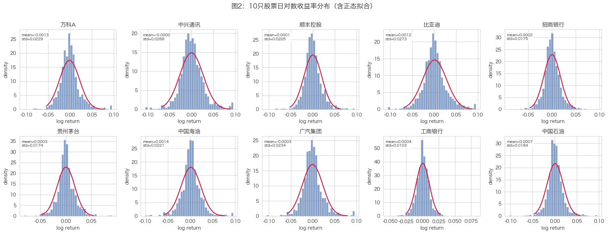
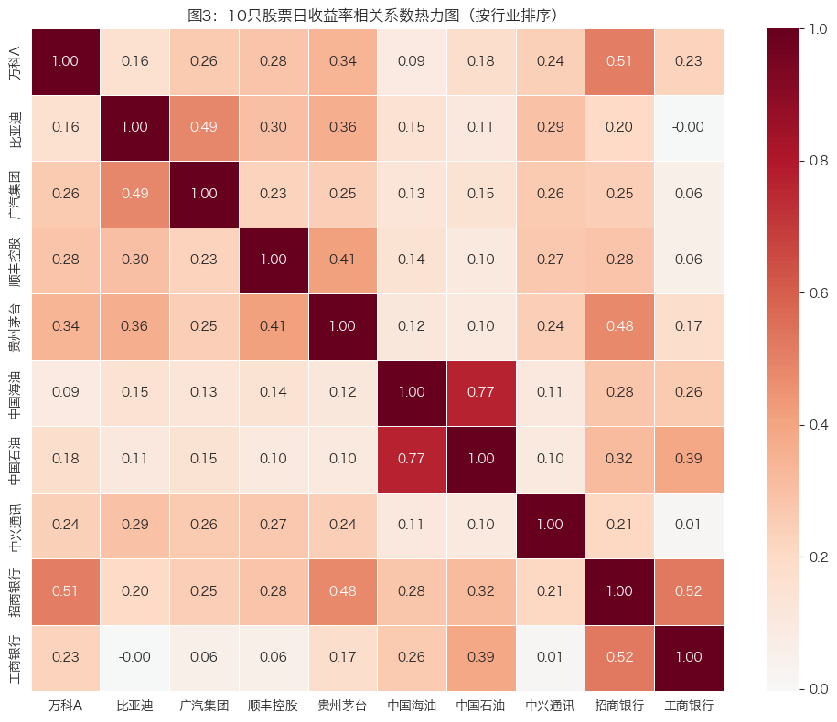
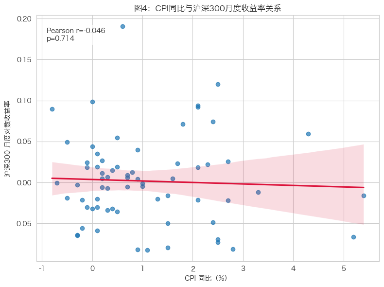
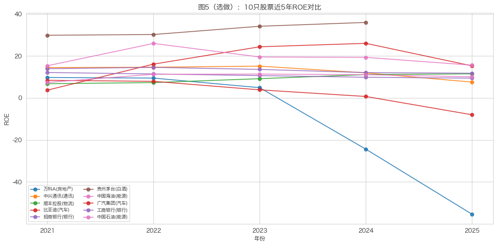
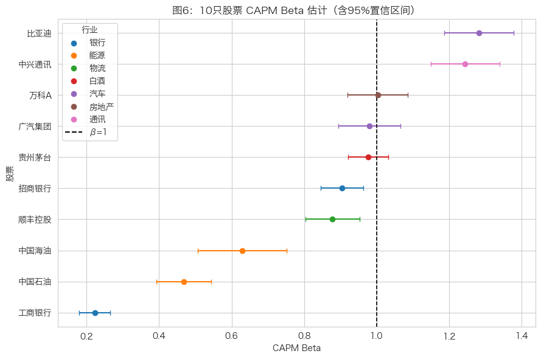
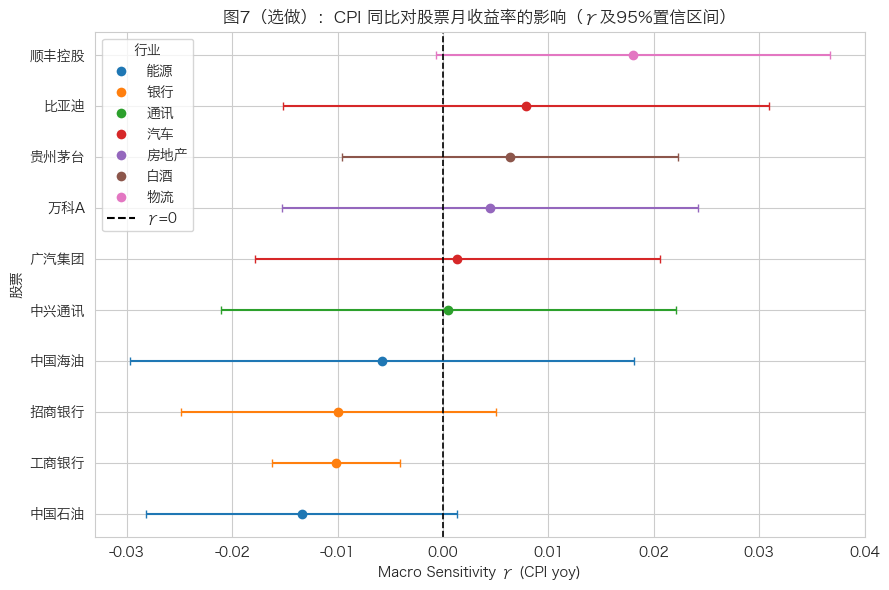

已设置字体: Hiragino Sans GB5 03_analysis：描述性统计与可视化
本 Notebook 对应作业第四部分：
- 4.1 计算 10 只股票日收益率的描述性统计
- 4.2 完成图1-图4必做可视化（图5选做）
- 所有图形保存至
output/，并确保分辨率不低于 150 dpi
5.1 环境准备与中文字体设置
本节完成依赖导入、路径设置，并配置 Matplotlib 中文字体，确保图中的中文标题与注释正常显示。
5.2 数据读取与收益率准备
读取清洗后的数据，构建股票收益率表、行业映射表与指数序列，为统计和可视化做准备。
stock shape: (14590, 13)
ret_wide shape: (1514, 10)| date | open | close | high | low | volume | amount | code | name | industry | daily_ret | is_extreme | log_ret | |
|---|---|---|---|---|---|---|---|---|---|---|---|---|---|
| 0 | 2020-01-02 | 4530.67 | 4497.51 | 4641.17 | 4490.61 | 101213040.0 | 3.342374e+09 | 000002 | 万科A | 房地产 | NaN | False | NaN |
| 1 | 2020-01-03 | 4518.23 | 4427.07 | 4532.05 | 4389.77 | 80553629.0 | 2.584310e+09 | 000002 | 万科A | 房地产 | -0.015662 | False | -0.015786 |
| 2 | 2020-01-06 | 4385.63 | 4352.48 | 4387.01 | 4316.56 | 87684058.0 | 2.761449e+09 | 000002 | 万科A | 房地产 | -0.016849 | False | -0.016992 |
5.3 清洗说明（02_clean.ipynb）
- 缺失值与异常值处理：对关键价格字段做缺失检查，按代码排序后进行必要填补；对单日涨跌幅超阈值样本进行离群标注（不直接删除）。
- 类型与主键一致性：统一
date为datetime、code为 6 位字符串，保证与指数、宏观、财务表的合并键一致。 - 去重与频率处理：去除重复记录；日频行情与月频宏观数据采用月末对齐或按月映射，避免频率错配造成伪相关。
- 合并口径：以股票日频表为主，采用 left join 合并指数与宏观信息，确保个股样本连续性。
- 数据完整性提示：财务 ROE 已按最近 5 个完整年度（2021-2025）重建，但贵州茅台 2025 年值在源接口缺失，该缺口在图 5 解读中单独说明。
5.4 4.1 基本统计量
本节计算 10 只股票日对数收益率的核心统计指标：
- 年化均值（
mean * 252） - 年化波动率（
std * sqrt(252)） - 偏度、峰度
- 最大回撤（基于收盘价序列计算）
| 股票 | 行业 | 年化均值 | 年化波动率 | 偏度 | 峰度 | 最大回撤 | |
|---|---|---|---|---|---|---|---|
| 0 | 万科A | 房地产 | -0.3234 | 0.3638 | 0.6562 | 3.2719 | -0.8657 |
| 1 | 广汽集团 | 汽车 | -0.0716 | 0.3709 | 0.5455 | 3.3966 | -0.6320 |
| 2 | 比亚迪 | 汽车 | 0.3060 | 0.4330 | 0.3040 | 2.0914 | -0.5254 |
| 3 | 顺丰控股 | 物流 | 0.0158 | 0.3246 | 0.3759 | 3.5340 | -0.7077 |
| 4 | 贵州茅台 | 白酒 | 0.0642 | 0.2770 | 0.2629 | 3.6141 | -0.4748 |
| 5 | 中国海油 | 能源 | 0.3448 | 0.3515 | 0.3530 | 3.7623 | -0.3109 |
| 6 | 中国石油 | 能源 | 0.1751 | 0.2926 | 0.2263 | 5.1463 | -0.3254 |
| 7 | 中兴通讯 | 通讯 | -0.0019 | 0.4261 | 0.3092 | 2.4817 | -0.6187 |
| 8 | 工商银行 | 银行 | 0.0927 | 0.1631 | 0.4546 | 5.7904 | -0.2017 |
| 9 | 招商银行 | 银行 | 0.0468 | 0.2773 | 0.2647 | 3.1519 | -0.5094 |
已保存: output/desc_stats.csv5.5 4.2 图 1：归一化收盘价走势图（含沪深300）
做法说明：
- 对每只股票用首个有效交易日收盘价归一化到 1
- 沪深300同样归一化后叠加
- 颜色按行业映射，图例中体现股票与行业信息

图 1 解读：
- 从归一化走势看，不同行业股票在样本期内呈现明显分化，说明行业属性与个股基本面共同影响长期收益路径。
- 与沪深300相比，部分个股在某些阶段表现出更高弹性，也意味着其波动与风险暴露可能更大。
- 将行业信息映射到图例后，可以更直观地观察同一行业内部与跨行业之间的走势差异。
5.6 图 2：日收益率分布图（2×5 分面 + 正态曲线）
做法说明：
- 对 10 只股票分别绘制日对数收益率直方图
- 叠加同均值与标准差的正态密度曲线
- 每个子图标注均值与标准差

图 2 解读：
- 各股票收益率分布普遍表现出“尖峰厚尾”特征，说明极端波动事件发生概率高于标准正态分布假设。
- 不同股票的均值与波动率差异明显，反映了行业属性和个股经营周期对风险收益特征的影响。
- 正态曲线与经验分布在尾部的偏离，为后续风险管理（如 VaR、尾部风险评估）提供了依据。
5.7 图 3：收益率相关系数热力图
做法说明：
- 先计算 10 只股票日对数收益率相关系数矩阵
- 再按行业排序代码，观察同行业与跨行业相关性的差异
- 热力图中标注具体相关系数数值

图 3 解读：
- 整体上看，多数股票之间相关系数为正，说明市场系统性因素（宏观流动性、风险偏好）对个股收益有共同驱动。
- 若同一行业内部的相关系数普遍更高，通常意味着行业景气、政策冲击和成本结构相近导致联动更强。
- 跨行业较低相关性有助于分散化配置，后续可据此讨论资产组合的风险分散效果。
5.8 图 4：宏观指标与沪深300月度收益率关系（CPI）
做法说明：
- 将沪深300日度收盘价转换为月末收盘并计算月度对数收益率
- 将 CPI 月度同比与同月沪深300收益率对齐
- 绘制散点图并拟合线性趋势线，同时标注 Pearson 相关系数

| hs300_ret_m | cpi_yoy | |
|---|---|---|
| 日期 | ||
| 2020-02-29 | -0.016076 | 5.4 |
| 2020-03-31 | -0.066609 | 5.2 |
| 2020-04-30 | 0.059612 | 4.3 |
| 2020-05-31 | -0.011711 | 3.3 |
| 2020-06-30 | 0.073983 | 2.4 |
图 4 解读：
- 散点图与拟合线反映了 CPI 同比变化与市场收益率之间的线性关系方向，Pearson 相关系数用于量化这种关系强弱。
- 若相关系数绝对值较小，通常说明单一宏观变量对股市月度波动的解释力有限，市场还受到政策、流动性与预期等多因素共同影响。
- 从经济含义看，通胀变化可能通过贴现率、盈利预期与风险偏好三条路径影响权益资产定价。
5.9 图 5（选做）：ROE 跨公司对比
做法说明：
- 读取
data/finance/finance_ratios.csv - 筛选
indicator=roe数据 - 按股票绘制近 5 年 ROE 折线图，并按行业着色

图 5 解读（选做）：
- ROE 曲线展示了各公司盈利能力随时间的变化路径，不同行业在资本回报水平和波动性上存在显著差异。
- 相对稳定且较高的 ROE 往往对应更强的盈利质量与经营韧性，但也需结合估值与行业周期综合判断。
- 行业内公司间 ROE 的分化，说明同一行业中企业治理、成本控制与业务结构差异同样关键。
- 数据完整性说明：贵州茅台（600519）2025 年 ROE 在当前数据源中缺失，因此图中该公司仅展示到 2024 年；该缺口来自源数据可得性，不是清洗或绘图过程丢失。
5.10 第五部分：回归分析
本部分完成 CAPM 日频回归（必做）和宏观指标月频回归（选做），并输出结果表与图。
5.10.1 5.1 CAPM 模型估计
模型设定：
\[r_{i,t} - r_f = \alpha_i + \beta_i(r_{m,t} - r_f) + \varepsilon_{i,t}\]
其中 \(r_f=0.02/252\)。对 10 只股票分别用 OLS 估计，输出 \(\hat{\alpha}\)、p 值、\(\hat{\beta}\)、95% CI 和 \(R^2\)。
| 股票 | 行业 | α_hat | α p值 | β_hat | 95% CI | R^2 | n_obs | |
|---|---|---|---|---|---|---|---|---|
| 0 | 万科A | 房地产 | -0.0013 | 0.0084 | 1.0028 | [0.920, 1.086] | 0.2698 | 1514 |
| 1 | 广汽集团 | 汽车 | -0.0003 | 0.5276 | 0.9800 | [0.894, 1.066] | 0.2478 | 1514 |
| 2 | 比亚迪 | 汽车 | 0.0012 | 0.0428 | 1.2818 | [1.186, 1.378] | 0.3110 | 1514 |
| 3 | 顺丰控股 | 物流 | 0.0000 | 0.9365 | 0.8780 | [0.803, 0.953] | 0.2593 | 1511 |
| 4 | 贵州茅台 | 白酒 | 0.0002 | 0.5316 | 0.9772 | [0.922, 1.033] | 0.4418 | 1514 |
| 5 | 中国海油 | 能源 | 0.0013 | 0.0624 | 0.6289 | [0.507, 0.751] | 0.0962 | 958 |
| 6 | 中国石油 | 能源 | 0.0006 | 0.1623 | 0.4680 | [0.393, 0.543] | 0.0908 | 1514 |
| 7 | 中兴通讯 | 通讯 | -0.0001 | 0.9295 | 1.2441 | [1.149, 1.339] | 0.3026 | 1513 |
| 8 | 工商银行 | 银行 | 0.0003 | 0.2460 | 0.2225 | [0.180, 0.265] | 0.0660 | 1514 |
| 9 | 招商银行 | 银行 | 0.0001 | 0.6965 | 0.9049 | [0.846, 0.963] | 0.3780 | 1514 |
已保存: output/capm_results.csv
CAPM 结果读取方式说明：
- 第 26 个代码单元仅输出统计量与分组结果（不在代码中直接输出文字结论）。
- 第 27 个 Markdown 单元基于这些统计量给出完整文字分析，便于报告复用与后续维护。
| metric | value | |
|---|---|---|
| 0 | n_total_stocks | 10 |
| 1 | n_beta_gt_1 | 3 |
| 2 | n_alpha_sig_5pct | 2 |
| 3 | max_R_squared_stock | 贵州茅台 |
| 4 | max_R_squared_value | 0.441798 |
| 5 | min_R_squared_stock | 工商银行 |
| 6 | min_R_squared_value | 0.066028 |
| 股票 | 行业 | beta_hat | beta_ci_low | beta_ci_high | R^2 | |
|---|---|---|---|---|---|---|
| 0 | 比亚迪 | 汽车 | 1.281757 | 1.185528 | 1.377986 | 0.311049 |
| 1 | 中兴通讯 | 通讯 | 1.244054 | 1.148760 | 1.339349 | 0.302641 |
| 2 | 万科A | 房地产 | 1.002830 | 0.919600 | 1.086060 | 0.269769 |
| 股票 | 行业 | alpha_hat | alpha_p | beta_hat | R^2 | |
|---|---|---|---|---|---|---|
| 0 | 万科A | 房地产 | -0.001328 | 0.008448 | 1.002830 | 0.269769 |
| 1 | 比亚迪 | 汽车 | 0.001180 | 0.042804 | 1.281757 | 0.311049 |
| 股票 | 行业 | R^2 | beta_hat | alpha_hat | alpha_p | |
|---|---|---|---|---|---|---|
| 0 | 贵州茅台 | 白酒 | 0.441798 | 0.977216 | 0.000210 | 0.531613 |
| 1 | 招商银行 | 银行 | 0.378006 | 0.904907 | 0.000138 | 0.696506 |
| 2 | 比亚迪 | 汽车 | 0.311049 | 1.281757 | 0.001180 | 0.042804 |
| 3 | 中兴通讯 | 通讯 | 0.302641 | 1.244054 | -0.000051 | 0.929464 |
| 4 | 万科A | 房地产 | 0.269769 | 1.002830 | -0.001328 | 0.008448 |
| 5 | 顺丰控股 | 物流 | 0.259278 | 0.877961 | 0.000036 | 0.936492 |
| 6 | 广汽集团 | 汽车 | 0.247800 | 0.980023 | -0.000329 | 0.527621 |
| 7 | 中国海油 | 能源 | 0.096181 | 0.628909 | 0.001270 | 0.062375 |
| 8 | 中国石油 | 能源 | 0.090816 | 0.468041 | 0.000632 | 0.162257 |
| 9 | 工商银行 | 银行 | 0.066028 | 0.222470 | 0.000296 | 0.246012 |
saved: output/capm_key_stats.csvCAPM 详细结果分析：
- 关于 \(\hat{\beta}>1\) 的股票
- 从统计表看，\(\hat{\beta}>1\) 的股票有 3 只：比亚迪（汽车，\(\hat{\beta}=1.282\)）、中兴通讯（通讯，\(\hat{\beta}=1.244\)）、万科A（房地产，\(\hat{\beta}=1.003\)）。
- 这意味着上述股票对市场波动更敏感，其中比亚迪与中兴通讯的“高 Beta”特征更明显；万科A虽然略高于 1，但区间与 1 较接近，更应解读为“接近市场平均敏感度上沿”。
- 行业上，汽车与通讯偏周期属性、受景气与风险偏好影响更直接，与较高 Beta 的经验认知总体一致。
- 关于 \(\hat{\alpha}\) 的显著性
- 在 5% 显著性水平下，只有万科A（\(p=0.008\)）与比亚迪（\(p=0.043\)）的 alpha 显著异于 0，其余样本均不显著。
- Alpha 显著通常表示：在控制市场超额收益后，该股票仍存在统计上可识别的平均超额收益（或负超额收益）成分，提示 CAPM 单因子并未完全解释其收益过程。
- 但需注意，显著 alpha 不自动等于“稳定可套利能力”，也可能来自阶段性行业冲击、样本区间特异性或遗漏因子（规模、价值、动量等）。
- 关于 \(R^2\) 的高低差异（
R2即 \(R^2\) 决定系数）
- \(R^2\) 最高的是贵州茅台（0.442），其次招商银行（0.378）与比亚迪（0.311）；最低的是工商银行（0.066）与中国石油（0.091）附近。
- 高 \(R^2\) 表示市场因子对该股超额收益解释力更强，收益更“市场化”；低 \(R^2\) 则说明非市场因素（行业政策、商品价格、公司事件、资产负债结构变化等）占比更高。
- 因此，CAPM 在不同股票上的拟合能力存在显著异质性：可作为基准框架，但在低 \(R^2\) 个股上应结合多因子模型做稳健性补充。
5.10.2 5.2 宏观指标对股票收益率的影响（选做）
选取月度 CPI 同比作为宏观指标 \(X_t\)，对 10 只股票分别估计：
\[r_{i,t}^{月} = \alpha_i + \gamma_i X_t + \varepsilon_{i,t}\]
并汇总 \(\hat{\gamma}\)、p 值、95% CI 与 \(R^2\)。
| 股票 | 行业 | γ_hat | γ p值 | 95% CI | R^2 | n_obs | |
|---|---|---|---|---|---|---|---|
| 0 | 万科A | 房地产 | 0.0045 | 0.6524 | [-0.0152, 0.0242] | 0.0031 | 67 |
| 1 | 广汽集团 | 汽车 | 0.0014 | 0.8880 | [-0.0178, 0.0206] | 0.0003 | 67 |
| 2 | 比亚迪 | 汽车 | 0.0079 | 0.4989 | [-0.0152, 0.0309] | 0.0071 | 67 |
| 3 | 顺丰控股 | 物流 | 0.0180 | 0.0592 | [-0.0007, 0.0367] | 0.0537 | 67 |
| 4 | 贵州茅台 | 白酒 | 0.0063 | 0.4290 | [-0.0096, 0.0223] | 0.0097 | 67 |
| 5 | 中国海油 | 能源 | -0.0058 | 0.6268 | [-0.0297, 0.0181] | 0.0063 | 40 |
| 6 | 中国石油 | 能源 | -0.0134 | 0.0744 | [-0.0282, 0.0014] | 0.0482 | 67 |
| 7 | 中兴通讯 | 通讯 | 0.0005 | 0.9641 | [-0.0211, 0.0221] | 0.0000 | 67 |
| 8 | 工商银行 | 银行 | -0.0102 | 0.0013 | [-0.0162, -0.0041] | 0.1473 | 67 |
| 9 | 招商银行 | 银行 | -0.0099 | 0.1888 | [-0.0249, 0.0050] | 0.0264 | 67 |
已保存: output/macro_gamma_results.csv
显著受 CPI 同比影响的股票：
工商银行（银行，γ=-0.0102, p=0.001）
行业层面的经济含义（简要）：
1) 对成本端受通胀冲击明显的行业，γ 可能偏负，反映利润率受挤压。
2) 对资源品/上游行业，若具备提价能力，γ 可能偏正。
3) 若 γ 不显著，说明在样本期内个股月收益更多由行业景气和公司特定事件主导。5.2 结果解读（选做）：
- 从系数方向看，CPI 同比对不同行业股票月收益率的影响存在分化：物流（顺丰，\(\hat{\gamma}=0.0180\)）与汽车（比亚迪，\(\hat{\gamma}=0.0079\)）偏正，能源与银行整体偏负（如中国石油 \(\hat{\gamma}=-0.0134\)、工商银行 \(\hat{\gamma}=-0.0102\)）。这反映了不同行业在通胀环境下的成本传导能力和需求弹性差异。
- 就统计显著性而言，仅工商银行在 5% 水平显著（\(p=0.0013\)，95% CI 为 \([-0.0162,-0.0041]\)，区间完全位于 0 以下），说明 CPI 上行阶段其月收益率更可能受到负向压制。其余股票的置信区间普遍穿过 0，暂不能认定存在稳定线性影响。
- 接近显著但未达阈值的个股主要是顺丰控股（\(p=0.059\)）和中国石油（\(p=0.074\)）。这提示两者可能存在方向性关系，但在当前样本长度和噪声水平下，统计证据仍不足，需要扩大样本或引入更多控制变量进一步验证。
- 从解释力度（\(R^2\)）看，整体数值偏低：多数股票在 0.00-0.05 区间，最高为工商银行（\(R^2=0.147\)）。这说明“单一宏观变量（CPI）”对个股收益的解释能力有限，个股月度回报仍主要由行业景气、政策冲击、风险偏好和公司特定事件共同驱动。
- 横向比较时还需注意样本可比性：中国海油月度样本数为 40，低于其他股票的 67，置信区间更宽，估计不确定性更高。因此其与其他股票的系数幅度不宜直接做强结论对比。
- 综上，图 7 更适合作为“宏观敏感性筛查”而非因果确认。
5.11 结论与研究边界
本项目已形成从“数据获取 → 清洗整合 → 描述统计与可视化 → CAPM 回归 → 宏观敏感性回归”的完整分析链条，主要结论如下：
- 描述统计与图表结果显示，不同行业股票在收益波动、分布形态与相关性结构上存在明显异质性，行业属性对风险收益特征有实质影响。
- CAPM 结果表明，市场因子对不同个股的解释力差异显著（\(R^2\) 分化明显），说明单因子模型可作为基准，但不足以完整刻画全部收益来源。
- 宏观回归（CPI）显示多数个股系数方向存在行业差异，但显著性整体有限，提示宏观变量对月度收益的影响具有“方向可讨论、强度需谨慎”的特征。
研究边界与注意事项：
- 财务数据来自公开接口，个别公司存在年度缺口（如贵州茅台 2025 年 ROE 缺失），已在图 5 处明确披露。
- 宏观回归为单变量设定，未纳入利率、信用、汇率等潜在共同驱动因素，后续可通过多因子模型与稳健性检验进一步提升解释力。
- 本报告结论用于课程研究与方法演示，不构成任何投资建议。